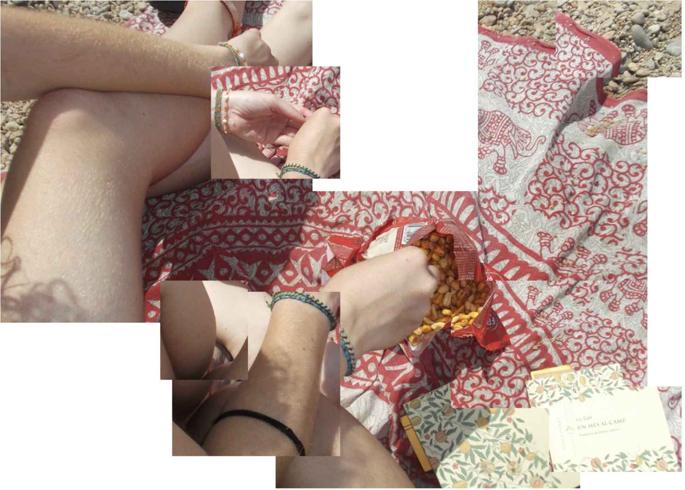
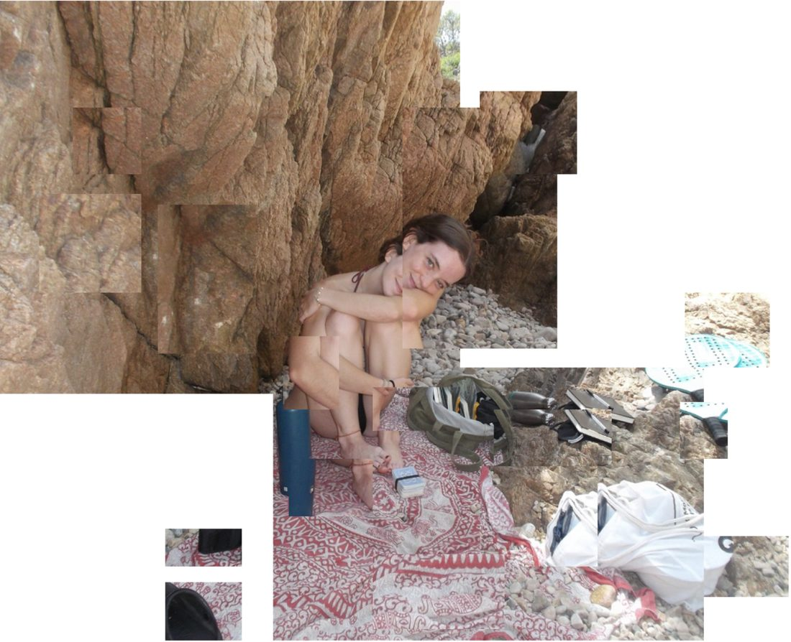
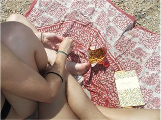
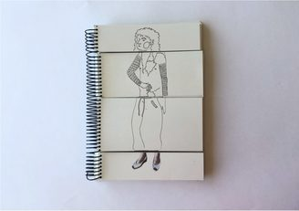
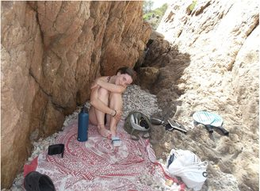
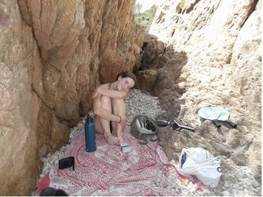
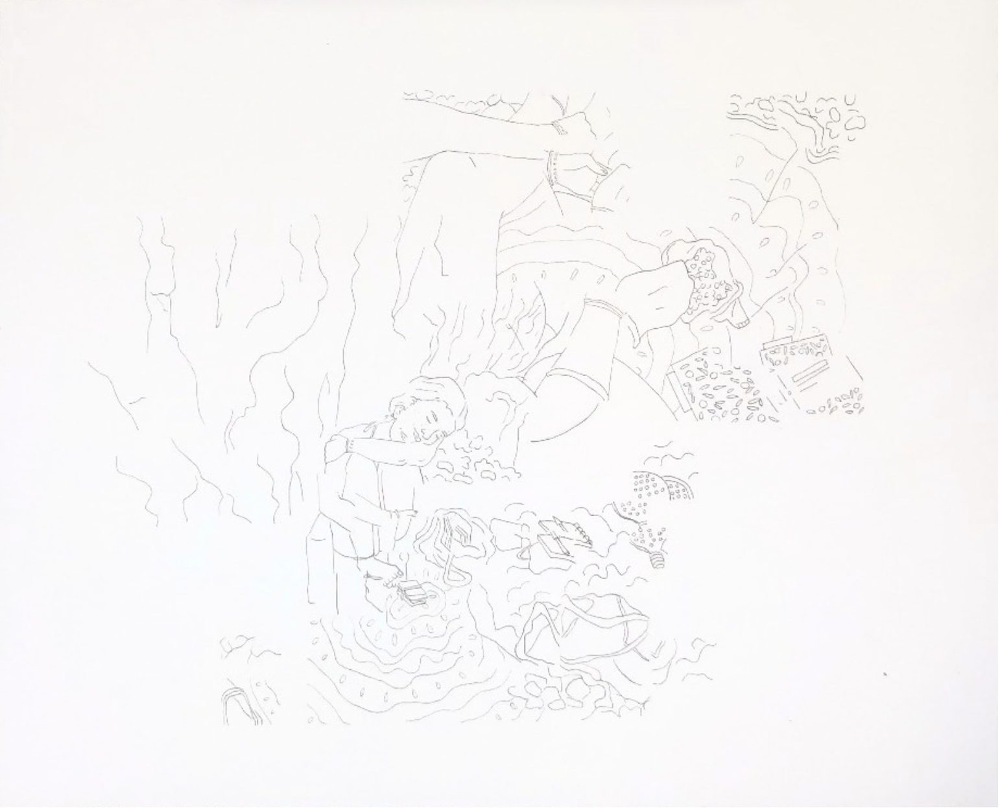

Fragments.
Oblidar i transformar els records és inevitable en l’acte de recordar. Amb el pas del temps, la memòria perd fragments i en reconstrueix d’altres, fent que allò que recordem no sigui mai una reproducció exacta del que vam viure. Per representar-ho, parteixo de dos moments diferents, cadascun amb dues fotografies molt similars, i en combino fragments en un mateix dibuix. Així, els records es barregen i es desdibuixen, reflectint com la memòria transforma i reinterpreta el passat.







Fragments. 2026.
Dibuix lineal amb punta fina negre de 0,2 mm sobre paper de 200 g/m².
Representació dels fragments de quatre fotografies.
75 x 110 cm.